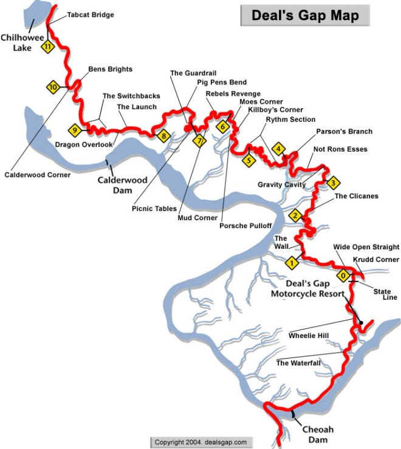
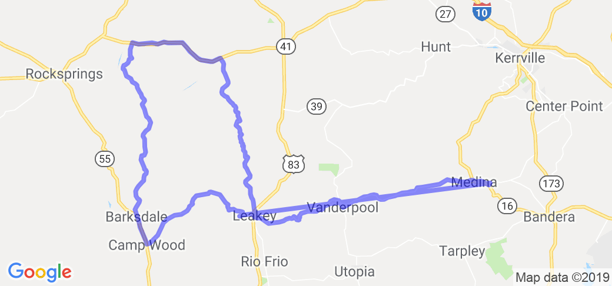
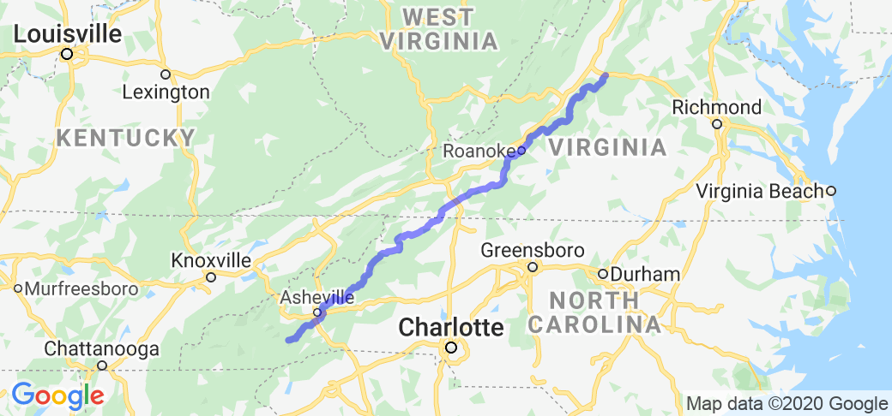

States to Travel Through
- Arizona
The longest stretch of genuine old U.S. 66 is in western Arizona, running 90 lonely miles from Seligman to Kingman alongside the tracks of the Burlington-Northern-Santa Fe. Railroads came in the late 19th century, and automotive roads followed in the early 20th. In Seligman lives Angel Delgadillo, who was born there 88 years ago and has been instrumental in preserving the legend of old 66.
- Arkansas
The riding around the Buffalo National River in the Ozark Mountains provides endless amusement, and many chances to wash the dust off your wheels. The Newton County seat of Jasper, on State Route 7, provides a focal point, and little roads go off in every direction, including through the Ozark National Forest. A word to the wise: If you are faced with fording a river, best to walk the distance first, just so you don’t end up with a flooded bike.
- California
The Big Sur Highway, carved out of the coast along the Santa Lucia Range for a hundred miles between Cambria and Carmel, is my own favorite road, being almost in my backyard. It’s an all-year ride, presuming that winter rains do not cause landslides. Two lanes with an uncountable number of curves, the mountains on one side, the surf frothing along the short on the other. Don’t try sightseeing from the moving motorcycle; stop and then look, it’s safer.
- Colorado
Schofield Pass (10,707 feet) is not for the faint of heart, being one of the toughest rides in the Rocky Mountains. Back in the 1880s, when silver was king, the 5-mile Gothic Road was built between the mining sites in Marble and Crested Butte, much of it merely a shelf blasted out of the mountainside that just drops straight down into the Crystal River Canyon. It’s a dangerous ride, and only the really, really competent should try it (according to Wikipedia, the pass has claimed 12 lives).
- Georgia
The Chattahoochee National Forest is one of the great motorcycle playgrounds, and the Two Wheels of Suches Motorcycle Campground & Lodge is the place to stay. Founded in the early 1980s by Frank and Jeanie Cheek, the original Two Wheels Only (T.W.O.) Motorcycle Resort hosted well over half a million motorcyclists. T.W.O. closed down in 2011, and the property was later purchased by motorcycle enthusiast and local resident Bill Johnston, who expanded and renovated the facility. It re-opened as Two Wheels of Suches in 2014. There are hundreds of miles of two-lane roads to ride, including the diabolically twisty Wolf Pen Gap Road (State Route 180), State Route 60 and U.S. Route 129, to name but a few.
- Idaho
The 160-mile Salmon River Scenic Byway runs along State Route 75 and U.S. Route 93 from the southern terminus of Stanley, in the Sawtooth Mountains, up the Continental Divide crossing at 7,014-foot Lost Trail Pass on the Idaho/Montana state line. The river is this great north-flowing cascade of water, paralleling much of the route, shared by fisherfolk and rafters. The forests are full of moose and elk and deer, so best be wary, especially at dawn and dusk.
- Kansas
If you want to take a 1950s trip across the Great Plains, take U.S. Route 36 across Kansas, about 400 miles from the Missouri River to St. Francis as the eagle flies. Back 150 years ago, much of this road was a major route for wagon trains and even, briefly, the Pony Express. Nowadays it offers the best of small-town America, with friendly folk serving up eggs and homemade sausage in the cafés, and clean and inexpensive motels when you need to sleep.
- Maine
U.S. Route 1/State Route 3 from Bath to Bar Harbor is only about 120 miles, but if you ride along all the little side roads the trip could take you a week. A dozen or more peninsulas reach south into the Atlantic Ocean from the main road, and they all have roads that are well worth exploration, whether it is to Boothbay or Port Clyde or Stonington. Good people will greet you, and the food is excellent—presuming you like fish and lobster.
Road Trips
- Deal's Gap (AKA "The Dragon" Or "Tail Of The Dragon")
Deal's gap is not the easiest road to find on a map because it is just a small 11 mile stretch that hugs the border of The Great Smoky Mountains National Park on its very sparsely populated southwest corner. Most of the road lies in Tennessee yet a small section of it crosses into North Carolina. Suggest you use the Online Map Link to get your bearings. The closest town to the north end of Deal's Gap is Tallahassee, TN and the closest town to the south end of the road is Tapoco, NC. And, keep in mind that when you get close to the road, all the locals can point you in the right direction if you are not sure.
- The Three Sisters (AKA The Twisted Sisters)
The Three Sisters route starts in Medina, TX. From Medina catch RR337 (at this point you are starting on "The Three Sisters") heading west (right). Take RR337 west until you come up on the town of Leakey. At Leakey, go north on US 83 for a just about a mile and look for RR336 on the left. Take a left onto RR336 which will head you north. Continue north on RR336 until you meet Texas 41 and at this point you will want to turn left in order to head west. Go west for 15 miles or so and you will find RR335 on the left. Take a left (east) and get on RR335 and drive south down to Camp Wood where you can take a left on to RR337 and finish out the loop when you hit Leakey again.
- Blue Ridge Parkway
One of the best parts of this road is the limited access. The only trucks ever encountered are the few service truck that service the two service station/restaurant areas along the parkway. Another plus is the 45 mph limit that allows you to see the surrounding scenery with out so much risk of having an accident. The road itself is very well maintained and the many curves are gentle.